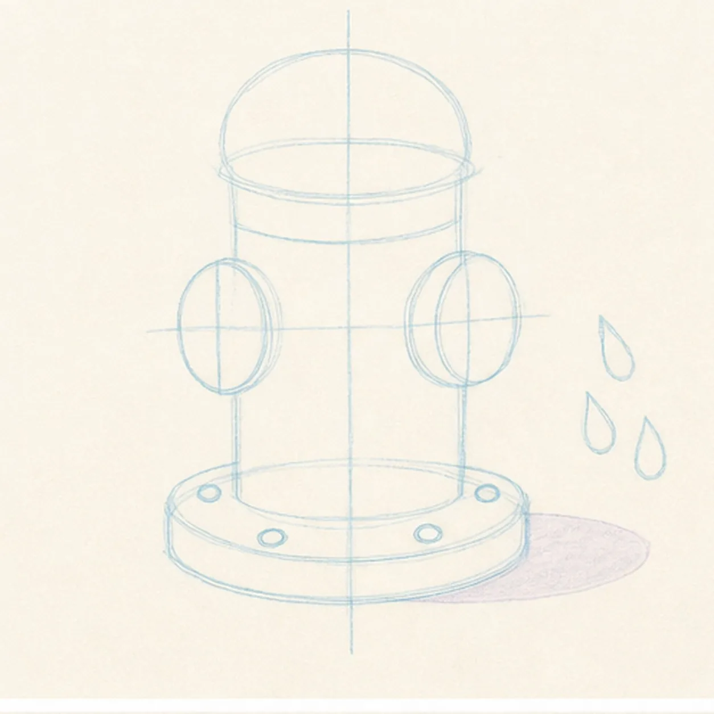
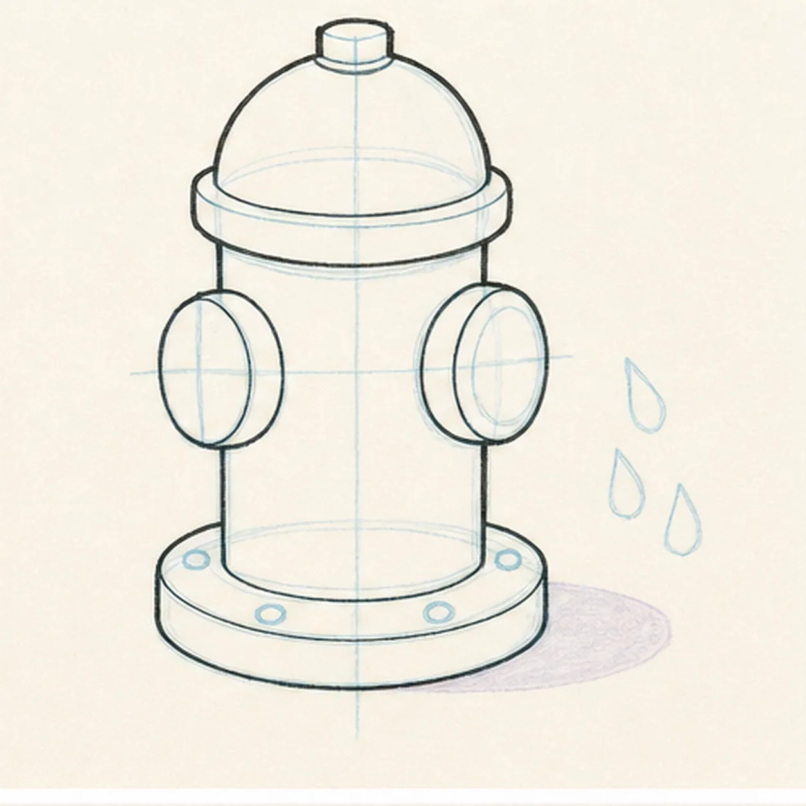
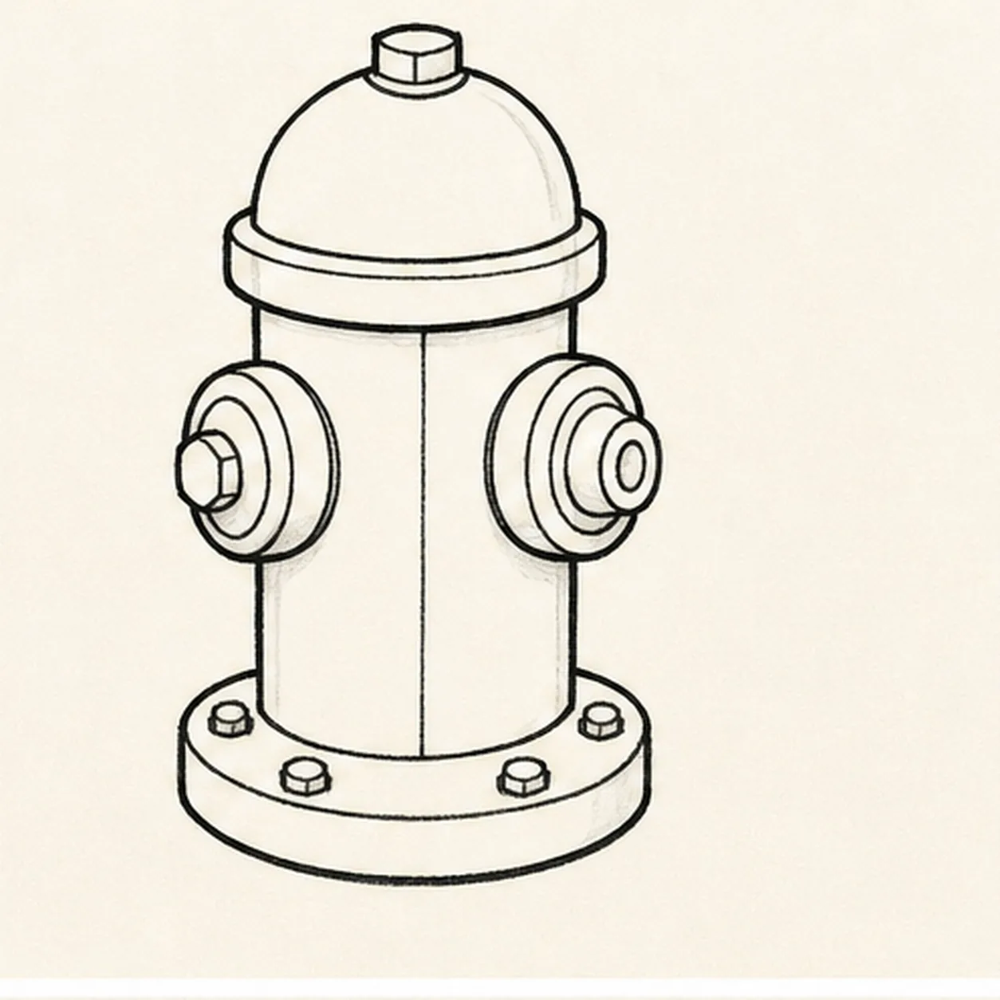
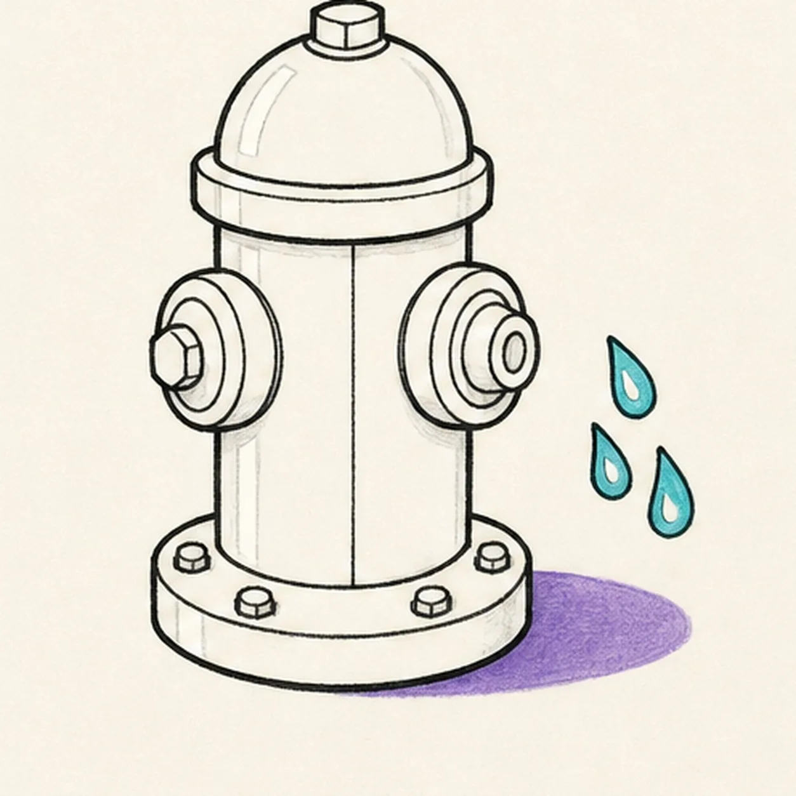
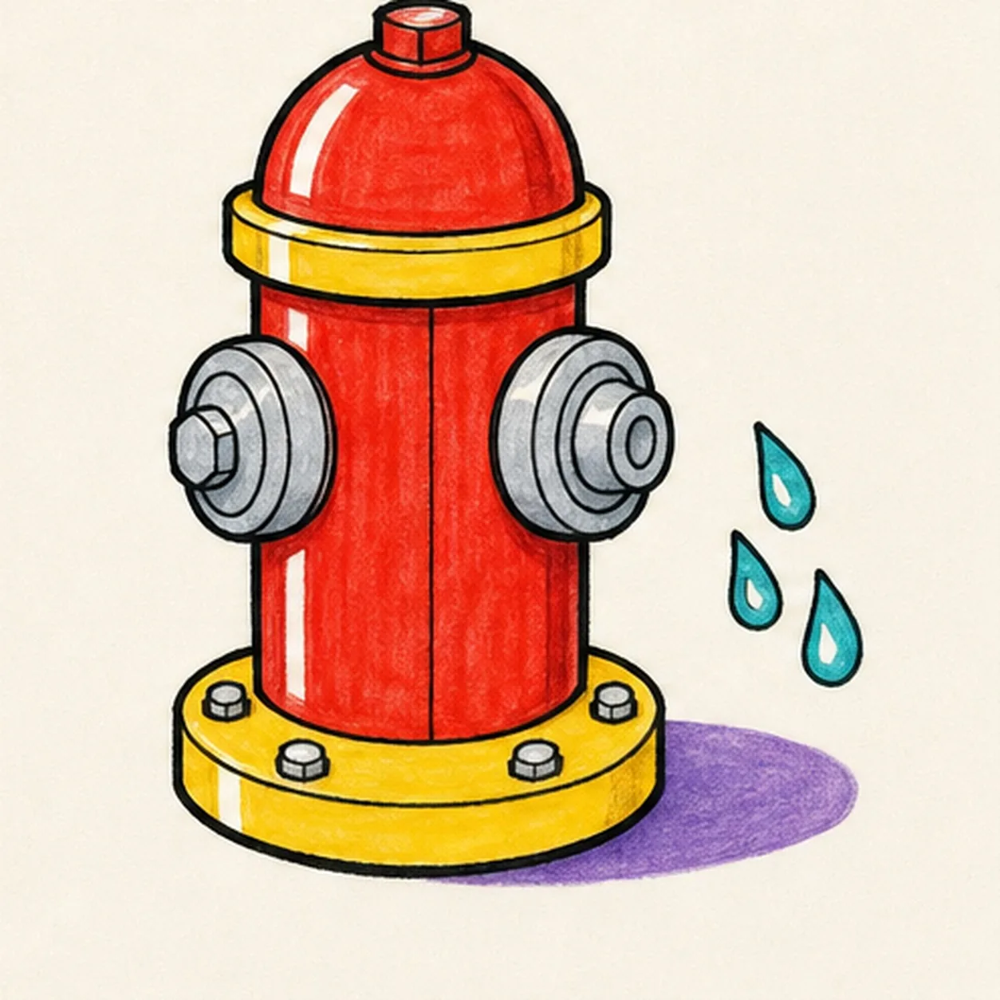

Felt-tip marker mode
Let's draw a fire hydrant
Treat this as one playful practice round: sketch the idea loosely, simplify the shapes, then commit with confident marker outlines and bright fills.
-
01

Stack the hydrant guides
Draw one light center axis, stack a domed-cap ellipse over a cylindrical body and wide base flange, then reserve two side-nozzle footprints, exactly four bolt positions, a three-drop zone, and one shadow shape.
Marker tip: Ghost the top and base ellipses before touching down. Compare the paper on both sides of the body and keep the nozzle, bolt, drop, and shadow reserves pale.
-
02

Shape the sturdy hydrant
Wrap the guides with the domed top, cylindrical body, two side nozzles, neck band, and wide base flange while preserving the same front view.
Marker tip: Turn the page for the long body edges and pull them in confident passes. Keep the cap and base ellipses related so the hydrant feels planted instead of top-heavy.
-
03

Build the caps and bolts
Add the top-cap seam, two ringed nozzle caps, central body seam, and exactly four visible bolts along the established base flange.
Marker tip: Repeat the nozzle rings as related shapes without forcing perfect symmetry. Count four base bolts before darkening their hexagonal edges.
-
04

Add the water accents
Draw exactly three small water drops beside one nozzle, preserve narrow white highlight gaps, and fill the planned violet ground-shadow shape beneath the established hydrant.
Marker tip: Vary the three drops slightly but keep them clear of the nozzle edge. Leave the highlight gaps as clean paper now instead of trying to paint white over marker later.
-
05

Ink and color the hydrant
Thicken every established contour and fill the body red, cap band and base yellow, water drops turquoise, hardware cool gray, and shadow violet.
Marker tip: Pull red strokes vertically down the body and curve them around the dome. Let the bright areas dry before reinforcing the nearby black seams and rings.
-
06

Turn up the hydrant finish
Strengthen the keeper outlines and clarify the established silhouette, cap seams, two nozzles, four bolts, three drops, marker fills, highlight gaps, and shadow.
Marker tip: Count two nozzles, four visible bolts, and three water drops, then stop. A face, hose, dog, street, lettering, second hydrant, sticker edge, or badge frame would crowd the sturdy single-subject design.